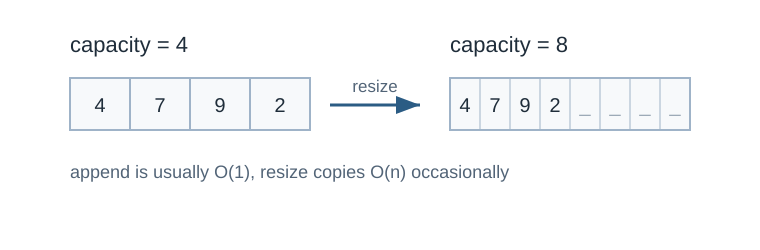
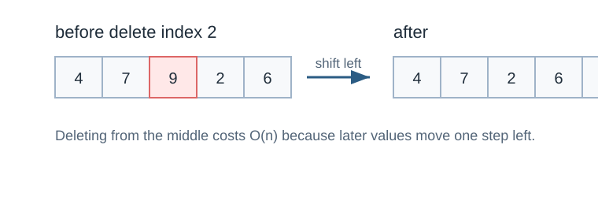

Dynamic Array
คำอธิบาย
dynamic array เป็น array ที่สามารถยืดหดขนาดได้
ใน STL จะมี vector เป็น dynamic array ให้ใช้
แนวทาง
เมื่อต้องการเพิ่มข้อมูลลงในอาเรย์ แต่อาเรย์นั้นเต็มแล้ว ให้สร้างฟังก์ชันโดย
ฟังก์ชันนั้นสร้างอาเรย์ขนาดสองเท่าจากเดิม และคัดลอกข้อมูลจากอาเรย์เดิมมาใส่
การเพิ่มข้อมูล
หากมีการขยายขนาดอาเรย์และคัดลอกข้อมูลจะทำให้ใช้เวลา O(n)
แต่กรณีนี้เกิดขึ้นเมื่ออาเรย์เต็มเท่านั้น
ดังนั้นในกรณีส่วนมากยังใช้เวลาเป็น O(1) อยู่ดี
ด้วย amortized analysis สามารถถัวเฉลี่ยการเพิ่มข้อมูลเป็น O(1) ได้

Dynamic array resize. Original diagram for this guide.
Delete Element
การลบข้อมูลสามารถทำได้ตามปกติเหมือนอาเรย์ทั่วไป
ในทางทฤษฎี สามารถลดขนาดอาเรย์ลงได้ แต่ไม่จำเป็นใน competitive programming

Deleting an array element by shifting later elements left. Original diagram for this guide.
ตัวอย่าง implementation แบบไม่ใช้ vector
#include <bits/stdc++.h>
using namespace std;
int cnt = 0;
int sz = 1;
int *A = new int[sz];
void add(int x) {
if (cnt == sz) {
sz *= 2;
int *tmp = new int[sz];
for (int i = 0; i < cnt; i++) {
tmp[i] = A[i];
}
free(A);
A = tmp;
}
A[cnt++] = x;
}
void remove() { cnt--; }
void removeAt(int j) {
for (int i = j; i < cnt; i++) {
A[i] = A[i + 1];
}
cnt--;
}
void print() {
printf("sz = %d, cnt = %d\\n", sz, cnt);
for (int i = 0; i < cnt; i++) {
printf("%d ", A[i]);
}
printf("\\n");
}
int main() {
add(1);
print();
add(2);
print();
add(3);
print();
add(4);
add(5);
print();
add(6);
print();
remove();
print();
removeAt(3);
print();
}